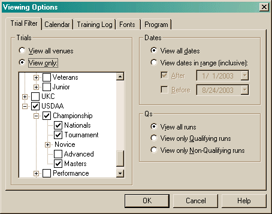

The Trial Filter allows you to hide runs. There are three selection criteria: Venue/Division/Level, Date and Qualifying. This can be a very easy way of determining how you have done during a given time period (for instance, did you have enough points/qualifiers to earn your way to Nationals?).

When you select the "View Only" radio button, the tree below it is enabled. When you check or uncheck any checkbox, it will also check/uncheck all checkboxes below it. In the above example, I am viewing only Master level runs in USDAA.
Changing the Dates radio button will also enable the fields below it. If neither checkbox is checked when you close the dialog, the Dates setting will revert back to viewing all dates.
When filtering by Qs, it is important to note that there is one place that will ignore this particular filter: the Points View. This is simply so it can display a Qualifying percentage that makes sense. In addition, the Points View will ignore all filtering when tallying lifetime points.
All View Options are saved into the local Windows Registry.